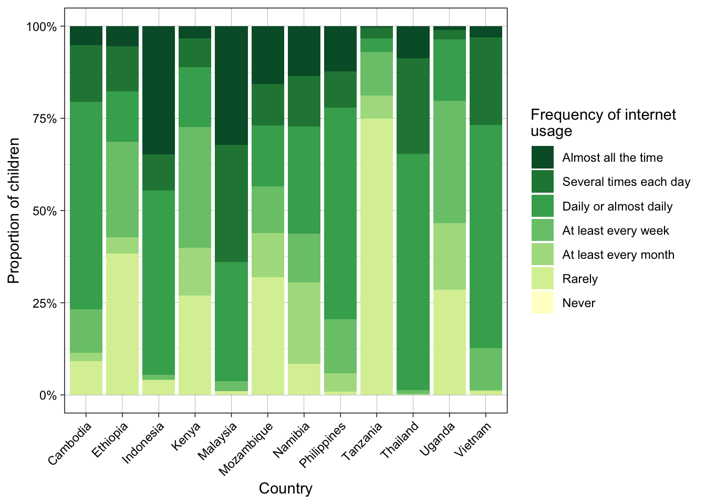

internet_summary <-data.frame(country =rep(country_list, each =7),value =rep(c("Never", "Rarely", "At least every month", "At least every week", "Daily or almost daily", "Several times each day", "Almost all the time"), length(country_list)),prop =rep(NA, length(country_list)*7))internet_summary$value <-factor(internet_summary$value, levels =rev(c("Never", "Rarely", "At least every month", "At least every week", "Daily or almost daily", "Several times each day", "Almost all the time")), ordered =TRUE)for(i inseq_along(unique(imputed_data$data$COUNTRY))){ country =unique(imputed_data$data$COUNTRY)[i] data <- full_data[full_data$COUNTRY == country,] data$B1 <- data$B1*5+2 m <-max(data$`.imp`)for(j in1:7){ sums <-sapply(1:m, function(x){sum(as.integer(data$B1[data$`.imp`== x] == j) * data$wgt_scaled[data$`.imp`== x], na.rm =TRUE) }) internet_summary$prop[(i-1)*7+ j] <-mean(sums) }}ggplot(internet_summary, aes(x = country, y = prop, fill = value)) +geom_col(position ="fill") +scale_y_continuous(labels = scales::percent) +scale_fill_brewer(palette ="YlGn", direction =-1) +labs(x ="Country", y ="Proportion of children", fill ="Frequency of internet\nusage") +theme_linedraw() +theme(axis.text.x=element_text(angle =45, hjust =1))

Wellbeing by lockdown status
Code
scores_lockdown_summary <-data.frame(country =rep(country_list, each =2),CO2 =rep(c("No lockdown", "Lockdown"), length(country_list)),mean_H1 =rep(NA, length(country_list)*2),se_H1 =rep(NA, length(country_list)*2),mean_CW_SWBS =rep(NA, length(country_list)*2),se_CW_SWBS =rep(NA, length(country_list)*2),mean_ANX =rep(NA, length(country_list)*2),se_ANX =rep(NA, length(country_list)*2),mean_CES_D =rep(NA, length(country_list)*2),se_CES_D =rep(NA, length(country_list)*2),mean_H6 =rep(NA, length(country_list)*2),se_H6 =rep(NA, length(country_list)*2),mean_PAYKEL =rep(NA, length(country_list)*2),se_PAYKEL =rep(NA, length(country_list)*2))for(i inseq_along(unique(imputed_data$data$COUNTRY))){ country <-unique(imputed_data$data$COUNTRY)[i] data <- full_data[full_data$COUNTRY == country,]for(j in0:1){ means_H1 <-sapply(1:m, function(x) mean(data$H1[data$`.imp`== x & data$CO2 == j] * data$wgt_scaled[data$`.imp`== x & data$CO2 == j], na.rm =TRUE)) scores_lockdown_summary$mean_H1[(i-1)*2+ j +1] <-mean(means_H1) ses_H1 <-sapply(1:m, function(x){sd(data$H1[data$`.imp`== x & data$CO2 == j] * data$wgt_scaled[data$`.imp`== x & data$CO2 == j], na.rm =TRUE) /sqrt(sum(data$`.imp`== x &!is.na(data$wgt_scaled) & data$CO2 == j)) }) scores_lockdown_summary$se_H1[(i-1)*2+ j +1] <-sqrt(mean(ses_H1^2) +var(means_H1) +var(means_H1)/m) means_CW_SWBS <-sapply(1:m, function(x) mean(data$CW_SWBS[data$`.imp`== x & data$CO2 == j] * data$wgt_scaled[data$`.imp`== x & data$CO2 == j], na.rm =TRUE)) scores_lockdown_summary$mean_CW_SWBS[(i-1)*2+ j +1] <-mean(means_CW_SWBS) ses_CW_SWBS <-sapply(1:m, function(x){sd(data$CW_SWBS[data$`.imp`== x & data$CO2 == j] * data$wgt_scaled[data$`.imp`== x & data$CO2 == j], na.rm =TRUE) /sqrt(sum(data$`.imp`== x &!is.na(data$wgt_scaled) & data$CO2 == j)) }) scores_lockdown_summary$se_CW_SWBS[(i-1)*2+ j +1] <-sqrt(mean(ses_CW_SWBS^2) +var(means_CW_SWBS) +var(means_CW_SWBS)/m) means_ANX <-sapply(1:m, function(x) mean(data$ANX[data$`.imp`== x & data$CO2 == j] * data$wgt_scaled[data$`.imp`== x & data$CO2 == j], na.rm =TRUE)) scores_lockdown_summary$mean_ANX[(i-1)*2+ j +1] <-mean(means_ANX) ses_ANX <-sapply(1:m, function(x){sd(data$ANX[data$`.imp`== x & data$CO2 == j] * data$wgt_scaled[data$`.imp`== x & data$CO2 == j], na.rm =TRUE) /sqrt(sum(data$`.imp`== x &!is.na(data$wgt_scaled) & data$CO2 == j)) }) scores_lockdown_summary$se_ANX[(i-1)*2+ j +1] <-sqrt(mean(ses_ANX^2) +var(means_ANX) +var(means_ANX)/m) means_CES_D <-sapply(1:m, function(x) mean(data$CES_D[data$`.imp`== x & data$CO2 == j] * data$wgt_scaled[data$`.imp`== x & data$CO2 == j], na.rm =TRUE)) scores_lockdown_summary$mean_CES_D[(i-1)*2+ j +1] <-mean(means_CES_D) ses_CES_D <-sapply(1:m, function(x){sd(data$CES_D[data$`.imp`== x & data$CO2 == j] * data$wgt_scaled[data$`.imp`== x & data$CO2 == j], na.rm =TRUE) /sqrt(sum(data$`.imp`== x &!is.na(data$wgt_scaled) & data$CO2 == j)) }) scores_lockdown_summary$se_CES_D[(i-1)*2+ j +1] <-sqrt(mean(ses_CES_D^2) +var(means_CES_D) +var(means_CES_D)/m) means_H6 <-sapply(1:m, function(x) mean(data$H6[data$`.imp`== x & data$CO2 == j] * data$wgt_scaled[data$`.imp`== x & data$CO2 == j], na.rm =TRUE)) scores_lockdown_summary$mean_H6[(i-1)*2+ j +1] <-mean(means_H6) ses_H6 <-sapply(1:m, function(x){sd(data$H6[data$`.imp`== x & data$CO2 == j] * data$wgt_scaled[data$`.imp`== x & data$CO2 == j], na.rm =TRUE) /sqrt(sum(data$`.imp`== x &!is.na(data$wgt_scaled) & data$CO2 == j)) }) scores_lockdown_summary$se_H6[(i-1)*2+ j +1] <-sqrt(mean(ses_H6^2) +var(means_H6) +var(means_H6)/m) means_PAYKEL <-sapply(1:m, function(x) mean(data$PAYKEL[data$`.imp`== x & data$CO2 == j] * data$wgt_scaled[data$`.imp`== x & data$CO2 == j], na.rm =TRUE)) scores_lockdown_summary$mean_PAYKEL[(i-1)*2+ j +1] <-mean(means_PAYKEL) ses_PAYKEL <-sapply(1:m, function(x){sd(data$PAYKEL[data$`.imp`== x & data$CO2 == j] * data$wgt_scaled[data$`.imp`== x & data$CO2 == j], na.rm =TRUE) /sqrt(sum(data$`.imp`== x &!is.na(data$wgt_scaled) & data$CO2 == j)) }) scores_lockdown_summary$se_PAYKEL[(i-1)*2+ j +1] <-sqrt(mean(ses_PAYKEL^2) +var(means_PAYKEL) +var(means_PAYKEL)/m) }}scores_lockdown_plot <-function(var, label, lower =0){suppressWarnings({ggplot(scores_lockdown_summary, aes(x = country, fill = CO2)) +geom_col(aes(y =get(paste("mean", var, sep ="_"))), position =position_dodge(width =0.9)) +geom_errorbar(aes(ymin =get(paste("mean", var, sep ="_")) -get(paste("se", var, sep ="_")), ymax =get(paste("mean", var, sep ="_")) +get(paste("se", var, sep ="_"))), position =position_dodge(width =0.9), width =0.2) +labs(x ="Country", y = label, fill ="Lockdown status") +coord_cartesian(ylim =c(lower, NA)) +theme_linedraw() +theme(axis.text.x=element_text(angle =45, hjust =1)) })}scores_lockdown_plot_percentage <-function(var, label){suppressWarnings({ggplot(scores_lockdown_summary, aes(x = country, fill = CO2)) +geom_col(aes(y =get(paste("mean", var, sep ="_"))), position =position_dodge(width =0.9)) +geom_errorbar(aes(ymin =get(paste("mean", var, sep ="_")) -get(paste("se", var, sep ="_")), ymax =get(paste("mean", var, sep ="_")) +get(paste("se", var, sep ="_"))), position =position_dodge(width =0.9), width =0.2) +scale_y_continuous(labels = scales::percent) +labs(x ="Country", y = label, fill ="Lockdown status") +theme_linedraw() +theme(axis.text.x=element_text(angle =45, hjust =1)) })}
Life satisfaction
Code
scores_lockdown_plot("H1", "Mean life satisfaction (rescaled between 0 and 1)")